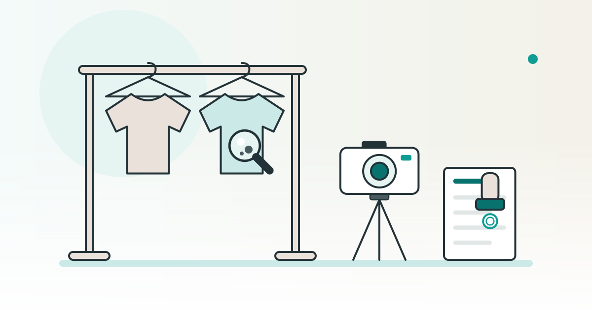

SHOPKIT コラム
古着のネットショップを始めるには古物商の許可・仕入れ・写真

古着のネットショップを開業する前に、服をどう集め、どのように売るかを整理しましょう。許可の確認と、仕入れた服の状態を正確に伝える準備をつなげることが出発点です。この記事では、警察署に相談する際のメモから、現物ごとの写真・説明・返品条件までをまとめます。
この記事は、完成品のネットショップを販売している SHOPKIT が書いています。
古着をどう集めて売るかを整理し、許可の要否を相談する
売るために古着を仕入れ、継続して販売する計画なら、古物商の許可に関する確認を、商品を集め始める前の準備に置きましょう。自分で着ていた服を処分する計画と、ほかの人から服を買い入れて売る計画を、同じ説明で済ませないようにします。
警察庁の「古物営業法等の解釈運用基準について」（2024年8月14日）は、営利を目的として同じ種類の行為を繰り返し続けることを、営業の説明として示しています。また、古物の売却だけを行う場合などの扱いを区別し、取引の実際の内容に即して判断するとしています。
同資料では、小売店などから一般消費者へ渡った品物は、まだ使われていなくても古物に当たると説明しています。「着ていないから新品扱いでよい」と自分だけで決めず、入手した経緯も相談のメモへ書きましょう。
- 集め方：自分が使っていた服か、販売用に購入する服か、販売を頼まれる服か。
- 取引先と場所：国内で仕入れるか、海外で仕入れるか、誰から受け取るか。
- 売り方：自分の店で売る予定か、ほかの販売場所も使うか。
- 続け方：どこを営業の拠点にし、どのように仕入れと販売を続ける予定か。
このメモをもとに、営業する場所を管轄する警察署へ相談してください。許可が要るか、どの手続きを先に進めるかを、この記事だけで決めることはできません。
申請の窓口と、ネット販売で届け出る内容を確かめる
警察庁の「古物営業法の一部を改正する法律の施行について」（2020年4月1日）では、許可の申請は、主たる営業所の所在地を管轄する警察署長を経由し、主たる公安委員会へ提出する流れを説明しています。申請の準備は、営業拠点の警察署で、現在の様式や必要書類を確認するところから進めましょう。
ネットで売る場合には、お店の住所に当たるURLについても確認します。警察庁の解釈運用基準には、ウェブサイトで古物の取引を行おうとする許可申請者のURLの届出や、そのURLを使う権限を示す資料の説明があります。届出の対象となる取引方法か、どのURLと資料を用意するかを、窓口で確かめてください。
同資料は、ネット上で取引する古物商について、氏名や名称、許可をした公安委員会の名称、許可証の番号をサイトに表示する説明もしています。届出とサイトの表示を別々の確認事項として残し、自分の売り方に応じた内容と載せ方を警察署で確かめましょう。
窓口へは、拠点の候補、仕入れと販売の方法、お店のURLの状況を伝えます。申請から許可までの日数や添付書類はここで一律に示さず、仕入れや開店の予定を決める前に確認してください。
仕入れの候補は、現物の状態と説明できる範囲で選ぶ
仕入れを考える際は、服の種類や価格だけでなく、実物の状態をどこまで確かめられるかも見ます。確認できない汚れや傷があるまま購入すると、届いてから撮影や説明を作り直す必要が出るかもしれません。判断に必要な写真や情報が足りなければ、追加で聞くか、その候補を見送ることも考えましょう。
仕入れの記録と商品ページ用の記録は、同じ品物だと分かる管理番号でつなぐ案が考えられます。入手先・入手日・購入時の説明と、自分が現物を確認した結果を区別して残します。こうした状態メモと、古物営業に必要な本人確認や帳簿の記録は分けて考え、法令上の手順は警察署で確認してください。
| 見る所 | 記録の例 | 写真や説明へつなぐこと |
|---|---|---|
| 表面と内側 | 前身頃の裾に薄いしみ、内側の縫い目にほつれ | 部位と状態が分かる全体写真・近接写真 |
| 襟・袖口・裾 | 袖口の擦れ、襟の色の変化 | 着用時に見える位置と変化の程度 |
| 留め具・付属品 | ボタンの欠け、付属ベルトの有無 | 何が付くか、使う際に確かめる所 |
| 寸法とタグ | 測った場所と実寸、タグを読めるか | 表示サイズと実際の寸法を分けた案内 |
「状態良好」といった短い言葉を使う場合も、それだけで済ませず、どこを確かめ、何が残っているかを添えます。においや着用感など写真だけでは伝えにくいことも、確認した範囲で具体的に書きましょう。ここで挙げた記録例は、実際の商品を評価したものではありません。
現物の全体写真と、傷の位置が分かる写真を組にする
古着の写真は、販売するその服の全体から撮ります。前と後ろの形を見せたうえで、傷やしみがある場所へ近づいた写真を添える案が考えられます。拡大した写真だけでは位置をつかみにくいため、全体のどの場所かも説明しましょう。
写真を並べるときは、管理番号、部位、説明文の呼び名をそろえます。写真では右袖、文章では左袖になっていないかを現物で照らします。明るさを整える場合も、しみや色落ちを消してしまわないようにし、撮影後の写真を現物と見比べてください。
サイズはタグの表記と、自分が測った寸法を分けて書きます。身幅や着丈など、測った位置を説明し、手持ちの服と比べる材料にしてもらいましょう。タグが読めない場合に、見た目だけで素材を決めることは避けます。
消費者庁の「家庭用品品質表示法」の案内は、法律で対象とする品目を定め、その品質について表示する事項や方法を示す制度だと説明しています。古着の販売で必要になる表示や、タグが欠けた服の扱いは、品物の情報をそろえて同庁などの相談窓口で確かめてください。
関連：服のネットショップを始めるには｜品質表示・原産国・サイズの伝え方
関連：ネットショップの商品写真の撮り方｜一覧でそろって見える条件と使えない画像
状態の説明と返品条件を、購入前に一緒に読めるようにする
古着だからという理由だけで、返品の条件の説明を省かないようにしましょう。商品ページには確認した傷やしみを記載し、お店の案内には、返品を受け付ける場合の条件を分かる形で用意します。購入後の問い合わせを受ける窓口も、見つけられる場所に示しておきます。
消費者庁の特定商取引法ガイド「通信販売」は、返品の特約を設ける場合、受け付けるかどうか、期間や条件、返送にかかる費用の負担を表示する説明をしています。ネット通販では、注文を確定する前の画面にも返品特約を表示する説明があります。
同じガイドには、届いた品物が契約の内容に合わない場合の責任について、定めを設けたときに、その内容を表示する説明もあります。「返品不可」とだけ書けばすべての場面で対応しなくてよい、という結論にはせず、具体的な文言や個別の対応は公的資料と相談窓口で確認してください。
出品前には、状態メモ、写真、商品説明を同じ管理番号で見比べます。説明した傷の写真があるか、写真に写る付属品が実際に届くか、返品条件と食い違う案内がないかを読み直しましょう。
関連：ネットショップの返品の決まり｜通信販売にクーリング・オフは無い？返品特約の書き方
新品の服と比べ、現物ごとの説明を作る手間を見込む
新品の服でも寸法や素材の確認は必要ですが、古着では、それに加えて現物ごとの傷みや付属品の違いを説明する準備を考えます。同じブランドや表示サイズでも、見た目が似ているだけで同じ状態とは決めず、それぞれの服を確認します。
仕入れを増やす前に、状態を確かめ、写真を撮り、説明を整えるまでを、候補の商品でたどってみましょう。仕入れ値だけでなく、洗浄や補修を行うか、その内容をどう伝えるか、保管場所をどう確保するかも検討する材料になります。
古着のネットショップを選ぶかどうかは、取引の形に応じた手続きと、現物ごとの説明に取り組めるかを並べて考えます。お店を作る手段を決める前に、許可や届出の確認先と、仕入れから商品ページまでの記録方法を用意しておきましょう。
よくある質問
未着用の服も古物になる？
警察庁の解釈運用基準は、一般消費者へ渡った品物について、まだ使用されていなくても古物に当たると説明しています。自分の仕入れや販売の方法で必要な許可は、入手の経緯を伝えて警察署で確かめてください。
古物商の許可を警察署に相談するとき、何を伝えますか？
どこから服を集め、どこを拠点に、どの販売場所で売る予定かをメモします。サイトのURLについての準備状況も伝え、必要な手続きと資料を窓口で確認しましょう。
古着の傷は、拡大した写真だけで伝えてよいですか？
全体のどの場所にある傷かも分かるようにし、部位の説明と近接写真を組にする案を紹介しています。写真と文章の場所が食い違っていないか、現物で確かめてください。
※ 公的資料は2026年10月28日に確認しました。通達の発出日は本文の各リンクに記載しています。許可・届出や表示の個別の扱いは、営業拠点の警察署と各資料の相談窓口でご確認ください。